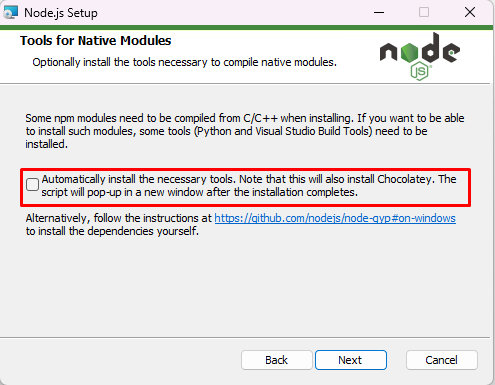

Go to the official Node.js website at https://nodejs.org
Click on the “Downloads” button on the home page.
Select the appropriate Windows version for your computer (32-bit or 64-bit)
Once the download is complete, open the downloaded file.
Follow the instructions in the installation wizard.
Choose the destination folder where you want Node.js to be installed.
Follow the remaining steps in the installation wizard.
Must be checked this option
Once the installation is complete, you can verify that Node.js is installed by opening a command prompt or terminal window and typing “node -v” (without quotes). This should display the version of Node.js that you installed.